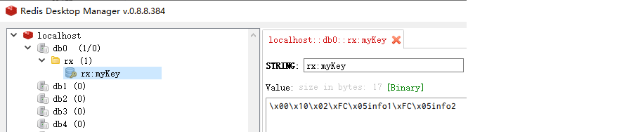
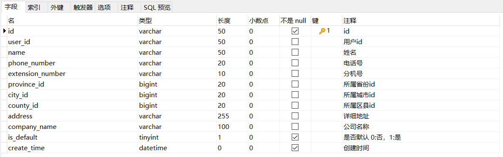
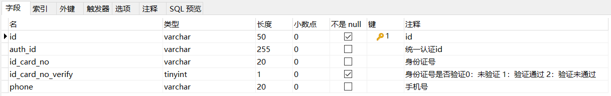
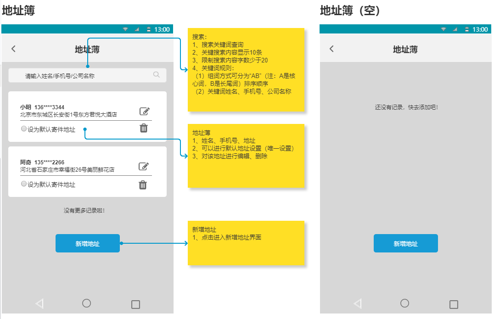
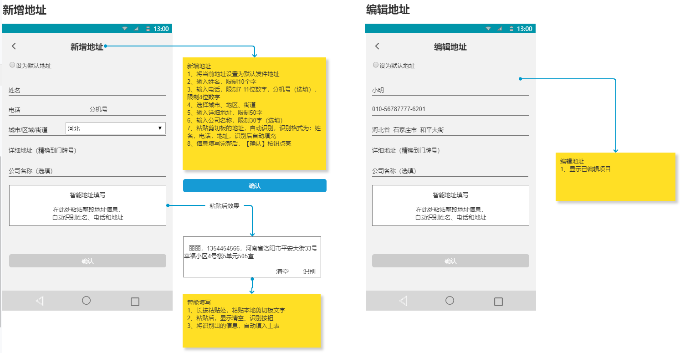
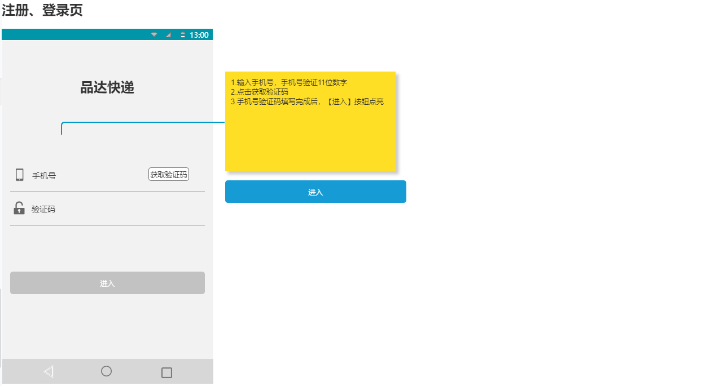
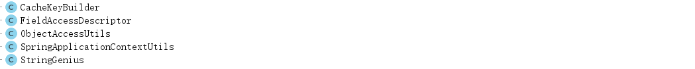
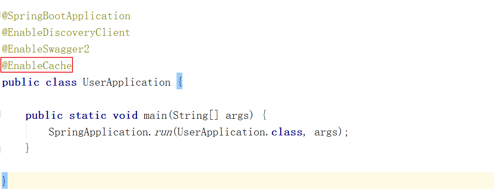

j2cache是OSChina目前正在使用的两级缓存框架。
j2cache的两级缓存结构：
j2cache其实并不是在重复造轮子，而是作资源整合，即将Ehcache、Caffeine、redis、Spring Cache等进行整合。
由于大量的缓存读取会导致L2的网络成为整个系统的瓶颈，因此L1的目标是降低对L2的读取次数。该缓存框架主要用于集群环境中。单机也可使用，用于避免应用重启导致的ehcache缓存数据丢失。
j2cache从1.3.0版本开始支持JGroups和Redis Pub/Sub两种方式进行缓存事件的通知。
数据读取顺序 -> L1 -> L2 -> DB
使用j2cache需要导入的maven坐标：
<dependency> <groupId>net.oschina.j2cache</groupId> <artifactId>j2cache-spring-boot2-starter</artifactId> <version>2.8.0-release</version></dependency><dependency> <groupId>net.oschina.j2cache</groupId> <artifactId>j2cache-core</artifactId> <version>2.8.0-release</version> <exclusions> <exclusion> <groupId>org.slf4j</groupId> <artifactId>slf4j-simple</artifactId> </exclusion> <exclusion> <groupId>org.slf4j</groupId> <artifactId>slf4j-api</artifactId> </exclusion> </exclusions></dependency>第一步：创建maven工程j2cache_demo并配置pom.xml文件
xxxxxxxxxx <project xmlns="http://maven.apache.org/POM/4.0.0" xmlns:xsi="http://www.w3.org/2001/XMLSchema-instance" xsi:schemaLocation="http://maven.apache.org/POM/4.0.0 http://maven.apache.org/xsd/maven-4.0.0.xsd"> <modelVersion>4.0.0</modelVersion> <parent> <groupId>org.springframework.boot</groupId> <artifactId>spring-boot-starter-parent</artifactId> <version>2.2.2.RELEASE</version> <relativePath/> </parent> <groupId>cn.itcast</groupId> <artifactId>j2cache_demo</artifactId> <version>1.0-SNAPSHOT</version> <dependencies> <dependency> <groupId>org.springframework.boot</groupId> <artifactId>spring-boot-starter-web</artifactId> </dependency> <dependency> <groupId>net.oschina.j2cache</groupId> <artifactId>j2cache-spring-boot2-starter</artifactId> <version>2.8.0-release</version> </dependency> <dependency> <groupId>net.oschina.j2cache</groupId> <artifactId>j2cache-core</artifactId> <version>2.8.0-release</version> <exclusions> <exclusion> <groupId>org.slf4j</groupId> <artifactId>slf4j-simple</artifactId> </exclusion> <exclusion> <groupId>org.slf4j</groupId> <artifactId>slf4j-api</artifactId> </exclusion> </exclusions> </dependency> </dependencies></project>第二步：创建application.yml
xserver port9000pinda redis ip127.0.0.1 port6379 password database0spring redis host$pinda.redis.ip password$pinda.redis.password port$pinda.redis.port database$pinda.redis.databasej2cache cache-clean-modepassive allow-null-valuestrue redis-clientlettuce #指定redis客户端使用lettuce，也可以使用Jedis l2-cache-opentrue #开启二级缓存 broadcastnet.oschina.j2cache.cache.support.redis.SpringRedisPubSubPolicy # broadcast: jgroups L1#指定一级缓存提供者为caffeine provider_classcaffeine L2#指定二级缓存提供者为redis provider_classnet.oschina.j2cache.cache.support.redis.SpringRedisProvider config_sectionlettuce sync_ttl_to_redistrue default_cache_null_objectfalse serializationfst #序列化方式：fst、kyro、Javacaffeine properties/caffeine.properties # 这个配置文件需要放在项目中lettuce modesingle namespace storagegeneric channelj2cache schemeredis hosts$pinda.redis.ip$pinda.redis.port password$pinda.redis.password database$pinda.redis.database sentinelMasterId maxTotal100 maxIdle10 minIdle10 timeout10000第三步：创建/resources/caffeine.properties文件
xxxxxxxxxx########################################## Caffeine configuration# [name] = size, xxxx[s|m|h|d]#########################################default=2000, 2hrx=50, 2h第四步：创建MyController
xxxxxxxxxxpackage cn.itcast.controller;import net.oschina.j2cache.CacheChannel;import net.oschina.j2cache.CacheObject;import org.springframework.beans.factory.annotation.Autowired;import org.springframework.web.bind.annotation.GetMapping;import org.springframework.web.bind.annotation.RequestMapping;import org.springframework.web.bind.annotation.RestController;import java.util.ArrayList;import java.util.List;("/cache")public class MyController { private String key = "myKey"; private String region="rx"; private CacheChannel cacheChannel; ("/getInfos") public List<String> getInfos(){ CacheObject cacheObject = cacheChannel.get(region, key); if(cacheObject.getValue() == null){ //缓存中没有找到，查询数据库获得 List<String> data = new ArrayList<String>(); data.add("info1"); data.add("info2"); //放入缓存 cacheChannel.set(region,key,data); return data; } return (List<String>) cacheObject.getValue(); } //清理指定缓存 ("/evict") public String evict(){ cacheChannel.evict(region,key); return "evict success"; } //检测存在那级缓存 ("/check") public String check(){ int check = cacheChannel.check(region, key); return "level:" + check; } //检测缓存数据是否存在 ("/exists") public String exists(){ boolean exists = cacheChannel.exists(region, key); return "exists:" + exists; } //清理指定区域的缓存 ("/clear") public String clear(){ cacheChannel.clear(region); return "clear success"; }}第五步：创建启动类
xxxxxxxxxxpackage cn.itcast;import org.springframework.boot.SpringApplication;import org.springframework.boot.autoconfigure.SpringBootApplication;public class J2CacheApp { public static void main(String[] args) { SpringApplication.run(J2CacheApp.class,args); }}注意：由于我们当前第二级缓存使用的是redis，所以需要启动redis服务才能正常运行入门案例。
启动项目，访问地址：http://localhost:9000/cache/getInfos
可以发现redis中已经缓存了数据：

重启项目，由于j2cache的一级缓存（caffeine）是进程级缓存，重启后一级缓存消失。但是二级缓存（redis）的数据还存在，再次访问上面地址，通过debug断点调试可以看到程序从redis中获取了缓存数据。
本章要开发的是用户微服务，对应的maven工程为pd-user。用户微服务提供TMS中C端用户的维护功能，例如：地址簿、用户信息等的维护功能。
用户服务对应操作的数据库为pd_users数据库，本小节就来了解一下pd_users数据库中的数据表结构。
pd_address_book为地址簿表，结构如下：

pd_member为C端用户表，结构如下：

pom.xml追加j2cache的maven坐标：
xxxxxxxxxx<dependency> <groupId>net.oschina.j2cache</groupId> <artifactId>j2cache-spring-boot2-starter</artifactId> <version>2.8.0-release</version></dependency><dependency> <groupId>net.oschina.j2cache</groupId> <artifactId>j2cache-core</artifactId> <version>2.8.0-release</version> <exclusions> <exclusion> <groupId>org.slf4j</groupId> <artifactId>slf4j-simple</artifactId> </exclusion> <exclusion> <groupId>org.slf4j</groupId> <artifactId>slf4j-api</artifactId> </exclusion> </exclusions></dependency>bootstrap.yml：
xxxxxxxxxxserver tomcat uri-encodingUTF-8 max-threads1000 min-spare-threads30 port8189 connection-timeout50000msspring application namepd-user # 环境 dev|test|prod profiles activedev main allow-bean-definition-overridingtruebootstrap-dev.yml：
xxxxxxxxxxspring redis host$pinda.redis.ip password$pinda.redis.password port$pinda.redis.port database$pinda.redis.database cloud nacos usernametms passworditheima123 discovery server-addr68.79.63.428848 grouppinda-tms namespace6107f553-3214-48d8-89c3-945f8446e3d9 config server-addr68.79.63.428848 file-extensionyml grouppinda-tms namespace6107f553-3214-48d8-89c3-945f8446e3d9 # jackson时间格式化 jackson time-zone$spring.jackson.time-zone date-format$spring.jackson.date-format servlet multipart max-file-size$spring.servlet.multipart.max-file-size max-request-size$spring.servlet.multipart.max-request-size enabled$spring.servlet.multipart.enabled datasource druid type$spring.datasource.druid.type driver-class-name$spring.datasource.druid.driver-class-name url$spring.datasource.druid.url username$spring.datasource.druid.username password$spring.datasource.druid.password initial-size$spring.datasource.druid.initial-size max-active$spring.datasource.druid.max-active min-idle$spring.datasource.druid.min-idle max-wait$spring.datasource.druid.max-wait pool-prepared-statements$spring.datasource.druid.pool-prepared-statements max-pool-prepared-statement-per-connection-size$spring.datasource.druid.max-pool-prepared-statement-per-connection-size time-between-eviction-runs-millis$spring.datasource.druid.time-between-eviction-runs-millis min-evictable-idle-time-millis$spring.datasource.druid.min-evictable-idle-time-millis test-while-idle$spring.datasource.druid.test-while-idle test-on-borrow$spring.datasource.druid.test-on-borrow test-on-return$spring.datasource.druid.test-on-return stat-view-servlet enabled$spring.datasource.druid.stat-view-servlet.stat-view-servlet url-pattern$spring.datasource.druid.stat-view-servlet.url-pattern filter stat log-slow-sql$spring.datasource.druid.filter.stat.log-slow-sql slow-sql-millis$spring.datasource.druid.filter.stat.slow-sql-millis merge-sql$spring.datasource.druid.filter.stat.merge-sql wall config multi-statement-allow$spring.datasource.druid.filter.wall.config.multi-statement-allowj2cache cache-clean-modepassive allow-null-valuestrue redis-clientlettuce #指定redis客户端使用lettuce，也可以使用Jedis l2-cache-opentrue #开启二级缓存 broadcastnet.oschina.j2cache.cache.support.redis.SpringRedisPubSubPolicy # broadcast: jgroups L1#指定一级缓存提供者为caffeine provider_classcaffeine L2#指定二级缓存提供者为redis provider_classnet.oschina.j2cache.cache.support.redis.SpringRedisProvider config_sectionlettuce sync_ttl_to_redistrue default_cache_null_objectfalse serializationfst #序列化方式：fst、kyro、Javacaffeine properties/caffeine.properties # 这个配置文件需要放在项目中lettuce modesingle namespace storagegeneric channelj2cache schemeredis hosts$pinda.redis.ip$pinda.redis.port password$pinda.redis.password database$pinda.redis.database sentinelMasterId maxTotal100 maxIdle10 minIdle10 timeout10000#mybatismybatis-plus mapper-locations$mybatis-plus.mapper-locations #实体扫描，多个package用逗号或者分号分隔 typeAliasesPackage$mybatis-plus.typeAliasesPackage global-config #数据库相关配置 db-config #主键类型 AUTO:"数据库ID自增", INPUT:"用户输入ID", ID_WORKER:"全局唯一ID (数字类型唯一ID)", UUID:"全局唯一ID UUID"; id-type$mybatis-plus.global-config.db-config.id-type #字段策略 IGNORED:"忽略判断",NOT_NULL:"非 NULL 判断"),NOT_EMPTY:"非空判断" field-strategy$mybatis-plus.global-config.db-config.field-strategy #驼峰下划线转换 column-underline$mybatis-plus.global-config.db-config.column-underline logic-delete-value$mybatis-plus.global-config.db-config.logic-delete-value logic-not-delete-value$mybatis-plus.global-config.db-config.logic-not-delete-value banner$mybatis-plus.global-config.banner #原生配置 configuration map-underscore-to-camel-case$mybatis-plus.configuration.map-underscore-to-camel-case cache-enabled$mybatis-plus.configuration.cache-enabled call-setters-on-nulls$mybatis-plus.configuration.call-setters-on-nulls jdbc-type-for-null$mybatis-plus.configuration.jdbc-type-for-null log-implorg.apache.ibatis.logging.stdout.StdOutImplcaffeine.properties：
xxxxxxxxxx########################################## Caffeine configuration# [name] = size, xxxx[s|m|h|d]#########################################default=2000, 2haddressBook=2000, 2hxxxxxxxxxxpackage com.itheima.pinda;import org.springframework.boot.SpringApplication;import org.springframework.boot.autoconfigure.SpringBootApplication;import org.springframework.cloud.client.discovery.EnableDiscoveryClient;import springfox.documentation.swagger2.annotations.EnableSwagger2;public class UserApplication { public static void main(String[] args) { SpringApplication.run(UserApplication.class, args); }}xxxxxxxxxxpackage com.itheima.pinda.config;import com.baomidou.mybatisplus.extension.plugins.PaginationInterceptor;import org.springframework.context.annotation.Bean;import org.springframework.context.annotation.Configuration;public class MybatisPlusConfig { public PaginationInterceptor paginationInterceptor() { return new PaginationInterceptor(); }}xxxxxxxxxxpackage com.itheima.pinda.config;import org.springframework.context.annotation.Bean;import org.springframework.context.annotation.Configuration;import org.springframework.web.servlet.config.annotation.ResourceHandlerRegistry;import org.springframework.web.servlet.config.annotation.WebMvcConfigurationSupport;import springfox.documentation.builders.ApiInfoBuilder;import springfox.documentation.builders.PathSelectors;import springfox.documentation.builders.RequestHandlerSelectors;import springfox.documentation.service.ApiInfo;import springfox.documentation.spi.DocumentationType;import springfox.documentation.spring.web.plugins.Docket;import springfox.documentation.swagger2.annotations.EnableSwagger2;public class SwaggerConfig extends WebMvcConfigurationSupport { // 定义分隔符 private static final String splitor = ";"; public Docket createRestApi() { // 文档类型 return new Docket(DocumentationType.SWAGGER_2) // 创建api的基本信息 .apiInfo(apiInfo()) // 选择哪些接口去暴露 .select() // 扫描的包 .apis(RequestHandlerSelectors.basePackage("com.itheima.pinda.controller")) .paths(PathSelectors.any()) .build(); } private ApiInfo apiInfo() { return new ApiInfoBuilder() .title("品达物流订单模块--Swagger文档") .version("1.0") .build(); } /** * 防止@EnableMvc把默认的静态资源路径覆盖了，手动设置的方式 * * @param registry */ protected void addResourceHandlers(ResourceHandlerRegistry registry) { // 解决静态资源无法访问 registry.addResourceHandler("/**").addResourceLocations("classpath:/static/"); // 解决swagger无法访问 registry.addResourceHandler("/swagger-ui.html").addResourceLocations("classpath:/META-INF/resources/"); // 解决swagger的js文件无法访问 registry.addResourceHandler("/webjars/**").addResourceLocations("classpath:/META-INF/resources/webjars/"); }}地址簿是TMS的C端用户来负责维护的基础数据，用户可以在寄件时从地址簿中选择寄件人和收件人。
产品原型如下：


地址簿对应的数据模型为：pd_users数据库中的pd_address_book表，表结构如下：
xxxxxxxxxxpackage com.itheima.pinda.entity;import com.baomidou.mybatisplus.annotation.IdType;import com.baomidou.mybatisplus.annotation.TableId;import com.baomidou.mybatisplus.annotation.TableName;import com.fasterxml.jackson.annotation.JsonFormat;import lombok.Data;import lombok.EqualsAndHashCode;import lombok.experimental.Accessors;import org.springframework.format.annotation.DateTimeFormat;import java.time.LocalDateTime;/** * 地址簿 */(callSuper = false)(chain = true)("pd_address_book")public class AddressBook implements Serializable{ (value = "id", type = IdType.ASSIGN_UUID) private String id; /** * 用户id */ private String userId; /** * 名字 */ private String name; /** * 手机号 */ private String phoneNumber; /** * 分机号 */ private String extensionNumber; /** * 省id */ private Long provinceId; /** * 市id */ private Long cityId; /** * 区域id */ private Long countyId; /** * 详细地址 */ private String address; /** * 公司名称 */ private String companyName; /** * 是否默认 1默认 */ private Integer isDefault; /** * 创建时间 */ (pattern = "yyyy-MM-dd HH:mm:ss") ( pattern = "yyyy-MM-dd HH:mm:ss" ) private LocalDateTime createTime;}第一步：创建AddressBookController并提供save方法
xxxxxxxxxxpackage com.itheima.pinda.controller;import com.baomidou.mybatisplus.extension.plugins.pagination.Page;import com.itheima.pinda.common.utils.PageResponse;import com.itheima.pinda.common.utils.Result;import com.itheima.pinda.entity.AddressBook;import com.itheima.pinda.service.IAddressBookService;import lombok.extern.log4j.Log4j2;import org.apache.commons.lang3.StringUtils;import org.springframework.web.bind.annotation.*;import org.springframework.beans.factory.annotation.Autowired;import net.oschina.j2cache.CacheChannel;import net.oschina.j2cache.CacheObject;/** * 地址簿 */("addressBook")public class AddressBookController { private IAddressBookService addressBookService; private CacheChannel cacheChannel; private String region = "addressBook"; /** * 新增 * * @param entity * @return */ ("") public Result save( AddressBook entity) { if (1 == entity.getIsDefault()) { addressBookService.lambdaUpdate().set(AddressBook::getIsDefault, 0).eq(AddressBook::getUserId, entity.getUserId()).update(); } boolean result = addressBookService.save(entity); if (result) { //载入缓存 cacheChannel.set(region,entity.getId(),entity); return Result.ok(); } return Result.error(); }}第二步：创建IAddressBookService接口
xxxxxxxxxxpackage com.itheima.pinda.service;import com.baomidou.mybatisplus.extension.service.IService;import com.itheima.pinda.entity.AddressBook;/** * 地址簿 */public interface IAddressBookService extends IService<AddressBook> {}第三步：创建上面服务接口的实现类AddressBookServiceImpl
xxxxxxxxxxpackage com.itheima.pinda.service.impl;import com.baomidou.mybatisplus.extension.service.impl.ServiceImpl;import com.itheima.pinda.entity.AddressBook;import com.itheima.pinda.mapper.AddressBookMapper;import com.itheima.pinda.service.IAddressBookService;import org.springframework.stereotype.Service;/** * 地址簿服务类实现 */public class AddressBookServiceImpl extends ServiceImpl<AddressBookMapper, AddressBook> implements IAddressBookService {}第四步：创建AddressBookMapper接口
xxxxxxxxxxpackage com.itheima.pinda.mapper;import com.baomidou.mybatisplus.core.mapper.BaseMapper;import com.itheima.pinda.entity.AddressBook;import org.apache.ibatis.annotations.Mapper;/** * 地址簿Mapper接口 */public interface AddressBookMapper extends BaseMapper<AddressBook> {}第五步：创建上面Mapper接口对应的xml映射文件
文件位置：/resources/mapper/AddressBookMapper.xml
xxxxxxxxxx <mapper namespace="com.itheima.pinda.mapper.AddressBookMapper"></mapper>在AddressBookController中创建detail方法
xxxxxxxxxx/*** 查询地址簿详情** @param id* @return*/("detail/{id}")public AddressBook detail((name = "id") String id) { //查询缓存 CacheObject cacheObject = cacheChannel.get(region, id); if(cacheObject.getValue() != null){ return (AddressBook) cacheObject.getValue(); } AddressBook addressBook = addressBookService.getById(id); if(addressBook != null){ //载入缓存 cacheChannel.set(region,id,addressBook); } return addressBook;}在AddressBookController中创建page方法
xxxxxxxxxx/*** 分页查询** @param page* @param pageSize* @param userId* @return*/("page")public PageResponse<AddressBook> page(Integer page, Integer pageSize, String userId, String keyword) { Page<AddressBook> iPage = new Page(page, pageSize); Page<AddressBook> pageResult = addressBookService.lambdaQuery() .eq(StringUtils.isNotEmpty(userId), AddressBook::getUserId, userId) .and(StringUtils.isNotEmpty(keyword), wrapper -> wrapper.like(AddressBook::getName, keyword).or() .like(AddressBook::getPhoneNumber, keyword).or() .like(AddressBook::getCompanyName, keyword)) .page(iPage); return PageResponse.<AddressBook>builder() .items(pageResult.getRecords()) .page(page) .pagesize(pageSize) .pages(pageResult.getPages()) .counts(pageResult.getTotal()) .build();}在AddressBookController中创建update方法
xxxxxxxxxx/*** 修改** @param id* @param entity* @return*/("/{id}")public Result update((name = "id") String id, AddressBook entity) { entity.setId(id); if (1 == entity.getIsDefault()) { addressBookService.lambdaUpdate().set(AddressBook::getIsDefault, 0).eq(AddressBook::getUserId, entity.getUserId()).update(); } boolean result = addressBookService.updateById(entity); if (result) { //清理缓存 cacheChannel.evict(region,id); return Result.ok(); } return Result.error();}在AddressBookController中创建del方法
xxxxxxxxxx/*** 删除** @param id* @return*/("/{id}")public Result del((name = "id") String id) { boolean result = addressBookService.removeById(id); if (result) { //清理缓存 cacheChannel.evict(region,id); return Result.ok(); } return Result.error();}此处的用户是指TMS的C端用户，用户在进行验证码登录时会自动完成注册。
产品原型如下：

注意：此处的注册登录功能调用的是通用的注册登录服务，由注册登录服务来完成C端用户的注册和登录功能，将用户信息保存到注册登录服务对应的customer_auth数据库中，同时将用户信息再保存到用户服务对应的pd_users数据库中。
用户对应的数据模型为：pd_users数据库中的pd_member表，表结构如下：
xxxxxxxxxxpackage com.itheima.pinda.entity;import com.baomidou.mybatisplus.annotation.IdType;import com.baomidou.mybatisplus.annotation.TableId;import com.baomidou.mybatisplus.annotation.TableName;import lombok.Data;import lombok.EqualsAndHashCode;import lombok.experimental.Accessors;/** * 用户 */(callSuper = false)(chain = true)("pd_member")public class Member implements Serializable{ (value = "id", type = IdType.ASSIGN_UUID) private String id; /** * 认证id */ private String authId; /** * 身份证号 */ private String idCardNo; /** * 身份证号是否认证 1认证 */ private Integer idCardNoVerify; /** * 手机号 */ private String phone;}第一步：创建MemberController并提供save方法
xxxxxxxxxxpackage com.itheima.pinda.controller;import com.itheima.pinda.common.utils.Result;import com.itheima.pinda.entity.Member;import com.itheima.pinda.service.IMemberService;import lombok.extern.log4j.Log4j2;import org.springframework.stereotype.Controller;import org.springframework.web.bind.annotation.*;import org.springframework.beans.factory.annotation.Autowired;/** * 用户前端控制器 */("member")public class MemberController { private IMemberService memberService; /** * 新增 * * @param entity * @return */ ("") public Result save( Member entity) { boolean result = memberService.save(entity); if (result) { return Result.ok(); } return Result.error(); }}第二步：创建IMemberService接口
xxxxxxxxxxpackage com.itheima.pinda.service;import com.baomidou.mybatisplus.extension.service.IService;import com.itheima.pinda.entity.Member;/** * 用户服务接口 */public interface IMemberService extends IService<Member> {}第三步：创建MemberServiceImpl实现类
xxxxxxxxxxpackage com.itheima.pinda.service.impl;import com.baomidou.mybatisplus.extension.service.impl.ServiceImpl;import com.itheima.pinda.entity.Member;import com.itheima.pinda.mapper.MemberMapper;import com.itheima.pinda.service.IMemberService;import org.springframework.stereotype.Service;/** * 用户服务类实现 */public class MemberServiceImpl extends ServiceImpl<MemberMapper, Member> implements IMemberService {}第四步：创建MemberMapper接口
xxxxxxxxxxpackage com.itheima.pinda.mapper;import com.baomidou.mybatisplus.core.mapper.BaseMapper;import com.itheima.pinda.entity.Member;import org.apache.ibatis.annotations.Mapper;/** * 用户Mapper接口 */public interface MemberMapper extends BaseMapper<Member> {}第五步：创建上面Mapper接口对应的xml映射文件
文件位置：/resources/mapper/MemberMapper.xml
xxxxxxxxxx <mapper namespace="com.itheima.pinda.mapper.MemberMapper"></mapper>在MemberController中创建detail方法：
xxxxxxxxxx/*** 详情** @param id* @return*/("detail/{id}")public Member detail((name = "id") String id) { Member Member = memberService.getById(id); return Member;}在MemberController中创建page方法：
xxxxxxxxxx/*** 分页查询** @param page* @param pageSize* @return*/("page")public PageResponse<Member> page(Integer page, Integer pageSize) { Page<Member> iPage = new Page(page, pageSize); LambdaQueryWrapper<Member> queryWrapper = new LambdaQueryWrapper<>(); Page<Member> pageResult = memberService.page(iPage, queryWrapper); return PageResponse.<Member>builder() .items(pageResult.getRecords()) .page(page) .pagesize(pageSize) .pages(pageResult.getPages()) .counts(pageResult.getTotal()) .build();}在MemberController中创建update方法：
xxxxxxxxxx/*** 修改** @param id* @param entity* @return*/("/{id}")public Result update((name = "id") String id, Member entity) { entity.setId(id); boolean result = memberService.updateById(entity); if (result) { return Result.ok(); } return Result.error();}在MemberController中创建del方法：
xxxxxxxxxx/*** 删除** @param id* @return*/("/{id}")public Result del((name = "id") String id) { boolean result = memberService.removeById(id); if (result) { return Result.ok(); } return Result.error();}前面我们讲解了j2cache框架的使用方法，使用j2cache可以将数据进行多级缓存。代码如下：
xxxxxxxxxx("/getInfos")public List<String> getInfos(){ CacheObject cacheObject = cacheChannel.get(region, key); if(cacheObject.getValue() == null){ //缓存中没有找到，查询数据库获得 List<String> data = new ArrayList<String>(); data.add("info1"); data.add("info2"); //放入缓存 cacheChannel.set(region,key,data); return data; } return (List<String>) cacheObject.getValue();}//清理指定缓存("/evict")public String evict(){ cacheChannel.evict(region,key); return "evict success";}//检测存在那级缓存("/check")public String check(){ int check = cacheChannel.check(region, key); return "level:" + check;}//检测缓存数据是否存在("/exists")public String exists(){ boolean exists = cacheChannel.exists(region, key); return "exists:" + exists;}//清理指定区域的缓存("/clear")public String clear(){ cacheChannel.clear(region); return "clear success";}如果项目中很多模块都需要使用缓存功能，这些模块都需要调用j2cache的API来进行缓存操作，这种j2cache提供的原生API使用起来就比较繁琐了，并且操作缓存的代码和我们的业务代码混合到一起，即j2cache的API对我们的业务代码具有侵入性。那么我们如何更加简洁、优雅的使用j2cache提供的缓存功能呢？
答案就是使用声明式缓存。所谓声明式缓存，就是定义缓存注解，在需要使用缓存功能的方法上加入缓存注解即可自动进行缓存操作。
这种使用方式类似于我们以前使用的声明式事务，即在类的方法上加入事务注解就可以实现事务控制。
注意：j2cache原生API和我们实现的声明式缓存可以兼容，即在项目中可以同时使用，互为补充。例如在Controller的方法中需要将多类业务数据载入缓存，此时通过声明式缓存就无法做到(因为声明式缓存只能将方法的返回值载入缓存)，这种场景下就需要调用j2cache的原生API来完成。
声明式缓存底层实现原理是基于AOP，通过代理技术来实现的。更确切的说，就是通过Spring提供的拦截器来拦截Controller，在拦截器中动态获取Controller方法上的注解，从而进行缓存相关操作。
要实现声明式缓存，需要设计如下主要的类和注解：
Cache:缓存注解，在Controller的方法上使用，用于缓存此方法的返回值
CacheEvictor:清理缓存注解，在Controller的方法上使用，用于清理指定缓存数据
CacheMethodInterceptor:缓存拦截器，用于拦截加入缓存相关注解的Controller方法
AbstractCacheAnnotationProcessor:抽象缓存注解处理器，为缓存操作提供一些公共方法
CachesAnnotationProcessor:缓存注解处理器，当Controller的方法上加入Cache注解时由此处理器进行缓存处理
CacheEvictorAnnotationProcessor:失效缓存注解处理器，当Controller的方法上加入CacheEvictor注解时由此处理器进行缓存失效处理
EnableCache:开启缓存功能注解，一般在项目的启动类上使用，用于开启缓存功能
xxxxxxxxxxpackage com.itheima.j2cache.annotation;import java.lang.annotation.*;/** * 缓存注解 */({ElementType.METHOD})(RetentionPolicy.RUNTIME)public @interface Cache { String region() default "rx"; String key() default ""; String params() default "";}1. – 表示使用该注解的元素应被javadoc或类似工具文档化，它应用于类型声明，类型声明的注解会影响客户端对注解元素的使用。如果一个类型声明添加了Documented注解，那么它的注解会成为被注解元素的公共API的一部分。2. – 表示支持注解的程序元素的种类，一些可能的值有TYPE, METHOD, CONSTRUCTOR, FIELD等等。如果Target元注解不存在，那么该注解就可以使用在任何程序元素之上。3. – 表示一个注解类型会被自动继承，如果用户在类声明的时候查询注解类型，同时类声明中也没有这个类型的注解，那么注解类型会自动查询该类的父类，这个过程将会不停地重复，直到该类型的注解被找到为止，或是到达类结构的顶层（Object）。4. – 表示注解类型保留时间的长短，它接收RetentionPolicy参数，可能的值有SOURCE, CLASS, 以及RUNTIME。xxxxxxxxxxpackage com.itheima.j2cache.annotation;import java.lang.annotation.*;/** * 失效缓存 */({ElementType.METHOD})(RetentionPolicy.RUNTIME)public @interface CacheEvictor { Cache[] value() default {};}xxxxxxxxxxpackage com.itheima.j2cache.model;import com.alibaba.fastjson.JSONObject;import java.lang.annotation.Annotation;/** * Cache信息包装 */public class AnnotationInfo<T extends Annotation> { private T annotation; private String key; private String region; public T getAnnotation() { return annotation; } public void setAnnotation(T cache) { this.annotation = cache; } public String getKey() { return key; } public String getRegion() { return region; } public void setKey(String key) { this.key = key; } public void setRegion(String region) { this.region = region; } public String toString() { if (annotation == null) { return null; } return JSONObject.toJSONString(this); }}xxxxxxxxxxpackage com.itheima.j2cache.model;/** * 缓存结果封装 */public class CacheHolder { private Object value;//缓存的数据 private boolean existsCache;//缓存数据是否存在 private Throwable throwable; /** * 初始化缓存占位 */ private CacheHolder() { } /** * 获取值 * * @return */ public Object getValue() { return value; } /** * 是否存在缓存 * * @return */ public boolean isExistsCache() { return existsCache; } /** * 是否有错误 * * @return */ public boolean hasError() { return throwable != null; } /** * 生成缓存结果的占位 * * @param value 结果 * @param existsCache 是否存在缓存 * @return 缓存 */ public static CacheHolder newResult(Object value, boolean existsCache) { CacheHolder cacheHolder = new CacheHolder(); cacheHolder.value = value; cacheHolder.existsCache = existsCache; return cacheHolder; } /** * 生成缓存异常的占位 * * @param throwable 异常 * @return 缓存 */ public static CacheHolder newError(Throwable throwable) { CacheHolder cacheHolder = new CacheHolder(); cacheHolder.throwable = throwable; return cacheHolder; }}
xxxxxxxxxxpackage com.itheima.j2cache.aop;import com.itheima.j2cache.annotation.Cache;import com.itheima.j2cache.annotation.CacheEvictor;import com.itheima.j2cache.aop.processor.AbstractCacheAnnotationProcessor;import com.itheima.j2cache.utils.SpringApplicationContextUtils;import org.aopalliance.intercept.Interceptor;import org.aspectj.lang.ProceedingJoinPoint;import org.aspectj.lang.annotation.Around;import org.aspectj.lang.annotation.Aspect;import org.aspectj.lang.reflect.MethodSignature;import org.springframework.context.annotation.EnableAspectJAutoProxy;import org.springframework.context.annotation.Import;import org.springframework.core.annotation.AnnotationUtils;import org.springframework.stereotype.Component;/** * 缓存拦截器 */(proxyTargetClass = true)(SpringApplicationContextUtils.class)public class CacheMethodInterceptor implements Interceptor { /** * 拦截单个Cache注解的方法以便实现缓存 * * @param proceedingJoinPoint 切点 * @return 结果 * @throws Throwable 异常 */ ("@annotation(com.itheima.j2cache.annotation.Cache)") public Object invokeCacheAllMethod(ProceedingJoinPoint proceedingJoinPoint) throws Throwable { MethodSignature methodSignature = (MethodSignature) proceedingJoinPoint.getSignature(); Cache cache = AnnotationUtils.findAnnotation(methodSignature.getMethod(), Cache.class); if (cache != null) { AbstractCacheAnnotationProcessor processor = AbstractCacheAnnotationProcessor.getProcessor(proceedingJoinPoint, cache); return processor.process(proceedingJoinPoint); } return proceedingJoinPoint.proceed(proceedingJoinPoint.getArgs()); } /** * 拦截CacheEvictor注解的方法以便实现失效指定key的缓存 * * @param proceedingJoinPoint 切点 * @return 结果 * @throws Throwable 异常 */ ("@annotation(com.itheima.j2cache.annotation.CacheEvictor)") public Object invokeCacheEvictorAllMethod(ProceedingJoinPoint proceedingJoinPoint) throws Throwable { MethodSignature methodSignature = (MethodSignature) proceedingJoinPoint.getSignature(); CacheEvictor cacheEvictor = AnnotationUtils.findAnnotation(methodSignature.getMethod(), CacheEvictor.class); if (cacheEvictor != null) { AbstractCacheAnnotationProcessor processor = AbstractCacheAnnotationProcessor.getProcessor(proceedingJoinPoint, cacheEvictor); return processor.process(proceedingJoinPoint); } return proceedingJoinPoint.proceed(proceedingJoinPoint.getArgs()); }}编写Controller并且在方法上加入缓存注解来测试当前方法能否被拦截：
xxxxxxxxxxpackage com.itheima.controller;import com.itheima.j2cache.annotation.Cache;import com.itheima.j2cache.annotation.CacheEvictor;import org.springframework.web.bind.annotation.*;import java.util.ArrayList;import java.util.List;import java.util.Map;/** * 测试j2cache缓存相关操作 */("/cache")public class J2cacheController { /** * 从j2cache中获取缓存数据 * * @return */ ("/getCacheData/{id}") (region = "rx", key = "user",params = "id") public List<String> getCacheData((name = "id") String id) { //没有获取到缓存数据，需要从数据库中查询数据 List<String> data = new ArrayList<>(); data.add("beijing"); data.add("nanjing"); data.add("shanghai"); System.out.println("查询数据库"); return data; } /** * 从j2cache中获取缓存数据 * * @return */ ("/getCacheDataBody") (region = "rx", key = "user",params = "0.name") public List<Map> getCacheDataBody( Map body) { //没有获取到缓存数据，需要从数据库中查询数据 List<Map> data = new ArrayList<>(); data.add(body); System.out.println("查询数据库"); return data; } /** * 从j2cache中获取缓存数据 * * @return */ ("/getCacheDataParams") (region = "rx", key = "user",params = "0.name") public List<Map> getCacheDataParams( Map params) { //没有获取到缓存数据，需要从数据库中查询数据 List<Map> data = new ArrayList<>(); data.add(params); System.out.println("查询数据库"); return data; } ("/getAllData") (region = "rx", key = "users") public List<String> getAllData() { //没有获取到缓存数据，需要从数据库中查询数据 List<String> data = new ArrayList<>(); data.add("beijing"); data.add("nanjing"); data.add("shanghai"); System.out.println("查询数据库"); return data; } /** * 清理指定缓存数据 * * @return */ ({(region = "rx",key = "user", params = "id")}) ("/evict/{id}") public String evict((name = "id") String id) { System.out.println("删除数据库"); return "evict success"; } /** * 清理指定缓存数据 * * @return */ ({(region = "rx",key = "users")}) ("/evict") public String evictAll() { System.out.println("删除数据库"); return "evict success"; }}xxxxxxxxxxpackage com.itheima.j2cache.aop.processor;import com.itheima.j2cache.annotation.Cache;import com.itheima.j2cache.annotation.CacheEvictor;import com.itheima.j2cache.model.AnnotationInfo;import com.itheima.j2cache.utils.CacheKeyBuilder;import com.itheima.j2cache.utils.SpringApplicationContextUtils;import net.oschina.j2cache.CacheChannel;import org.aspectj.lang.ProceedingJoinPoint;import org.aspectj.lang.reflect.MethodSignature;import org.springframework.context.ApplicationContext;import org.springframework.util.StringUtils;import java.lang.reflect.Method;/** * 抽象注解处理器 */public abstract class AbstractCacheAnnotationProcessor { protected CacheChannel cacheChannel; /** * 初始化缓存注解处理器 * * @param proceedingJoinPoint 切点 */ public AbstractCacheAnnotationProcessor() { ApplicationContext applicationContext = SpringApplicationContextUtils.getApplicationContext(); cacheChannel = applicationContext.getBean(CacheChannel.class); } /** * 转换为注解信息 * * @param cache 缓存注解 * @return 注解信息 */ protected AnnotationInfo<Cache> getAnnotationInfo(ProceedingJoinPoint proceedingJoinPoint, Cache cache) { AnnotationInfo<Cache> annotationInfo = new AnnotationInfo<>(); annotationInfo.setAnnotation(cache); annotationInfo.setRegion(cache.region()); try { annotationInfo.setKey(generateKey(proceedingJoinPoint, annotationInfo.getAnnotation())); } catch (IllegalAccessException e) { throw new IllegalArgumentException("生成键出错：", e); } return annotationInfo; } /** * 生成key字符串 * * @param cache 缓存注解 * @return key字符串 */ protected String generateKey(ProceedingJoinPoint proceedingJoinPoint, Cache cache) throws IllegalAccessException { String key = cache.key(); if (!StringUtils.hasText(key)) { String className = proceedingJoinPoint.getTarget().getClass().getSimpleName(); MethodSignature methodSignature = (MethodSignature) proceedingJoinPoint.getSignature(); Method method = methodSignature.getMethod(); key = className + ":" + method.getName(); } key = CacheKeyBuilder.generate(key, cache.params(), proceedingJoinPoint.getArgs()); return key; } /** * 处理 * * @param proceedingJoinPoint 切点 * @return 处理结果 */ public abstract Object process(ProceedingJoinPoint proceedingJoinPoint) throws Throwable; /** * 获取注解处理器 * * @param proceedingJoinPoint 切点 * @param cache 注解 * @return 注解处理器 */ public static AbstractCacheAnnotationProcessor getProcessor(ProceedingJoinPoint proceedingJoinPoint, Cache cache) { return new CachesAnnotationProcessor(proceedingJoinPoint, cache); } /** * 获取注解处理器 * * @param proceedingJoinPoint 切点 * @param cacheEvictor 注解 * @return 注解处理器 */ public static AbstractCacheAnnotationProcessor getProcessor(ProceedingJoinPoint proceedingJoinPoint, CacheEvictor cacheEvictor) { return new CacheEvictorAnnotationProcessor(proceedingJoinPoint, cacheEvictor); }}
xxxxxxxxxxpackage com.itheima.j2cache.aop.processor;import com.alibaba.fastjson.JSONObject;import com.itheima.j2cache.annotation.Cache;import com.itheima.j2cache.model.AnnotationInfo;import com.itheima.j2cache.model.CacheHolder;import net.oschina.j2cache.CacheObject;import org.aspectj.lang.ProceedingJoinPoint;import org.slf4j.Logger;import org.slf4j.LoggerFactory;import java.lang.annotation.Annotation;/** * Cache注解处理器 */public class CachesAnnotationProcessor extends AbstractCacheAnnotationProcessor { private static final Logger logger = LoggerFactory.getLogger(CachesAnnotationProcessor.class); private AnnotationInfo<Cache> annotationInfo; /** * 初始化缓存注解处理器 * * @param proceedingJoinPoint 切点 * @param annotation 注解 */ public CachesAnnotationProcessor(ProceedingJoinPoint proceedingJoinPoint, Annotation annotation) { super(); annotationInfo = getAnnotationInfo(proceedingJoinPoint, (Cache) annotation); } /** * 处理 * * @param proceedingJoinPoint 切点 * @return 处理结果 */ public Object process(ProceedingJoinPoint proceedingJoinPoint) throws Throwable { Object result = null; boolean readCache = false; //获取缓存数据 CacheHolder cacheHolder = getCache(annotationInfo); if (cacheHolder.isExistsCache()) { result = cacheHolder.getValue(); readCache = true; } if (!readCache) { //调用目标方法 result = doInvoke(proceedingJoinPoint); //设置缓存数据 setCache(result); } return result; } /** * 尝试获取值 * * @param proceedingJoinPoint 切点 * @return 结果 * @throws Throwable 异常时抛出 */ private Object doInvoke(ProceedingJoinPoint proceedingJoinPoint) throws Throwable { Object result = proceedingJoinPoint.proceed(proceedingJoinPoint.getArgs()); return result; } /** * 设置缓存 * * @param result 数据 * @throws Throwable 异常时抛出 */ private void setCache(Object result) throws Throwable { try { String key = annotationInfo.getKey(); String region = annotationInfo.getRegion(); cacheChannel.set(region, key, result); } catch (Throwable throwable) { logger.error("设置缓存时出错"); } } /** * 读取缓存 * * @param proceedingJoinPoint 切点 * @param annotationInfo 缓存信息 * @return 缓存 */ private CacheHolder getCache(AnnotationInfo<Cache> annotationInfo) { String region = annotationInfo.getRegion(); String key = annotationInfo.getKey(); Object value = null; boolean exists = cacheChannel.exists(region, key); if(exists){ CacheObject cacheObject = cacheChannel.get(region, key); value = cacheObject.getValue(); return CacheHolder.newResult(value,true); } return CacheHolder.newResult(value,false); }}
xxxxxxxxxxpackage com.itheima.j2cache.aop.processor;import com.alibaba.fastjson.JSONObject;import com.itheima.j2cache.annotation.Cache;import com.itheima.j2cache.annotation.CacheEvictor;import com.itheima.j2cache.model.AnnotationInfo;import org.aspectj.lang.ProceedingJoinPoint;import org.slf4j.Logger;import org.slf4j.LoggerFactory;import java.lang.annotation.Annotation;import java.util.ArrayList;import java.util.List;/** * 失效缓存注解处理器 */public class CacheEvictorAnnotationProcessor extends AbstractCacheAnnotationProcessor { private static final Logger logger = LoggerFactory.getLogger(CacheEvictorAnnotationProcessor.class); private List<AnnotationInfo<Cache>> cacheList = new ArrayList<>(); /** * 初始化缓存注解处理器 * * @param proceedingJoinPoint 切点 * @param annotation 注解 */ public CacheEvictorAnnotationProcessor(ProceedingJoinPoint proceedingJoinPoint, Annotation annotation) { super(); CacheEvictor cacheEvictor = (CacheEvictor) annotation; for (Cache cache : cacheEvictor.value()) { AnnotationInfo<Cache> annotationInfo = getAnnotationInfo(proceedingJoinPoint, cache); cacheList.add(annotationInfo); } } /** * 处理 * * @param proceedingJoinPoint 切点 * @return 处理结果 */ public Object process(ProceedingJoinPoint proceedingJoinPoint) throws Throwable { for (AnnotationInfo<Cache> item : cacheList) { try { cacheChannel.evict(item.getRegion(), item.getKey()); } catch (Throwable throwable) { logger.error("失效缓存时出错"); } } return proceedingJoinPoint.proceed(proceedingJoinPoint.getArgs()); }}xxxxxxxxxxpackage com.itheima.j2cache;import com.itheima.j2cache.aop.CacheMethodInterceptor;import org.springframework.context.annotation.Import;import java.lang.annotation.*;(RetentionPolicy.RUNTIME)({ElementType.TYPE})(CacheMethodInterceptor.class)public @interface EnableCache {}第一步：在启动类上加入EnableCache注解：

第二步：修改AddressBookController，使用注解缓存方式替换原生j2cache代码
xxxxxxxxxx/*** 查询地址簿详情** @param id* @return*/("detail/{id}")(region = "addressBook",key = "ab",params = "id")public AddressBook detail((name = "id") String id) { AddressBook addressBook = addressBookService.getById(id); return addressBook;}/** * 修改 * * @param id * @param entity * @return */("/{id}")({(region = "addressBook",key = "ab",params = "1.id")})public Result update((name = "id") String id, AddressBook entity) { entity.setId(id); if (1 == entity.getIsDefault()) { addressBookService.lambdaUpdate().set(AddressBook::getIsDefault, 0).eq(AddressBook::getUserId, entity.getUserId()).update(); } boolean result = addressBookService.updateById(entity); if (result) { return Result.ok(); } return Result.error();}/*** 删除** @param id* @return*/("/{id}")({(region = "addressBook",key = "ab",params = "id")})public Result del((name = "id") String id) { boolean result = addressBookService.removeById(id); if (result) { return Result.ok(); } return Result.error();}